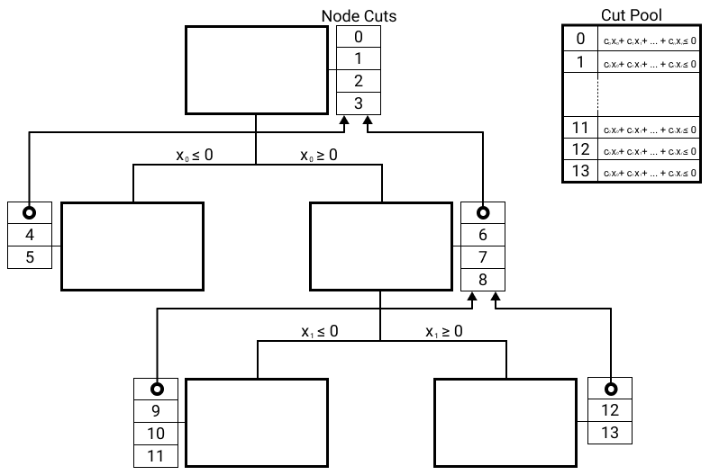

Cut Generation & Cut Pool¶
Cut Generation¶
At every iteration of the cut loop, GALINI generates new cuts by delegating cut
generation to cut generators. Cut generators implement the CutsGenerator
interface.
Cut Pool¶
All cuts are stored in a cut pool. Before starting the cut loop at each branch and bound node, GALINI will go through valid cuts for that node and add any violated cuts.
Cuts are considered valid for a node if they were generated by one of the node’s parents.

All nodes in the branch & bound tree keep a list of the cuts generated, together with a pointer to their parent cuts. A shared cut pool contains the cut expressions.¶